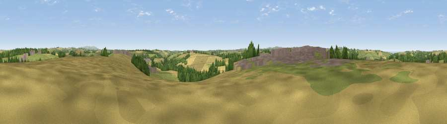

Viewpoint near Shortlanesend
#27039 in England · top 52% of its area beats it · near ShortlanesendWhere it is
The exact computed spot (SW 79875 49775). Click the marker for map links.
The view, rendered

A 360° render of this exact spot computed from the terrain model, tree cover and land cover — summer colours, afternoon light, calibrated against photographs of famous viewpoints. Real trees, hedges and buildings will differ in detail.
The panorama
Grey silhouette: terrain skyline in each direction (720 bearings, Earth curvature and refraction included). Dashed green: skyline with trees (+15 m) and buildings (+8 m) as obstacles. Blue strip: how far the ground is visible on each bearing.
Where the view opens
Wedge length = distance to the farthest visible ground on that bearing (vegetation-aware). Rings at 10, 25 and 50 km.
What fills the view
42% cropland · 39% grassland · 15% woodland · 4% built-up
Angular shares of the visible panorama (visual magnitude), not map area. Landscape diversity 0.51 (0–1 Shannon).
Key numbers
More beautiful places nearby
The staircase of upgrades: each row has a higher view potential than everything closer. Driving times are estimates from straight-line distance, calibrated against real road routing — check an actual route before setting out.
| Place | Direction | Drive | Score |
|---|---|---|---|
| Viewpoint near Bolingey | NW · 4 km | ~10 min | 49.0 |
| Viewpoint near Zelah | NE · 5 km | ~11 min | 66.5 |
| Viewpoint near St. Newlyn East | NE · 6 km | ~13 min | 70.6 |
| Viewpoint near Perrancoombe | WNW · 7 km | ~14 min | 71.3 |
| St Agnes Beacon | W · 9 km | ~17 min | 86.1 |
| Viewpoint near Foxhole | ENE · 18 km | ~31 min | 86.4 |
| Viewpoint near Stenalees | ENE · 22 km | ~36 min | 88.0 |
| Viewpoint near Crackington Haven | NE · 55 km | ~77 min | 88.1 |
50.30674, -5.09274 · source: screening · position refined by local search. Computed location — check access rights before visiting.